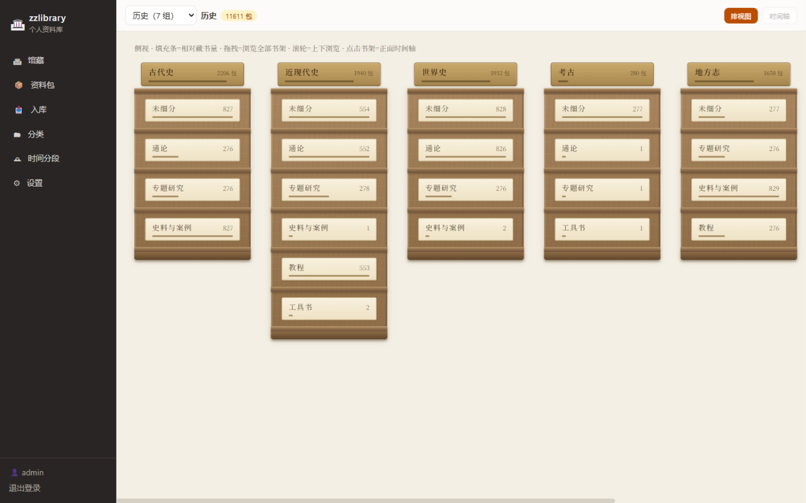
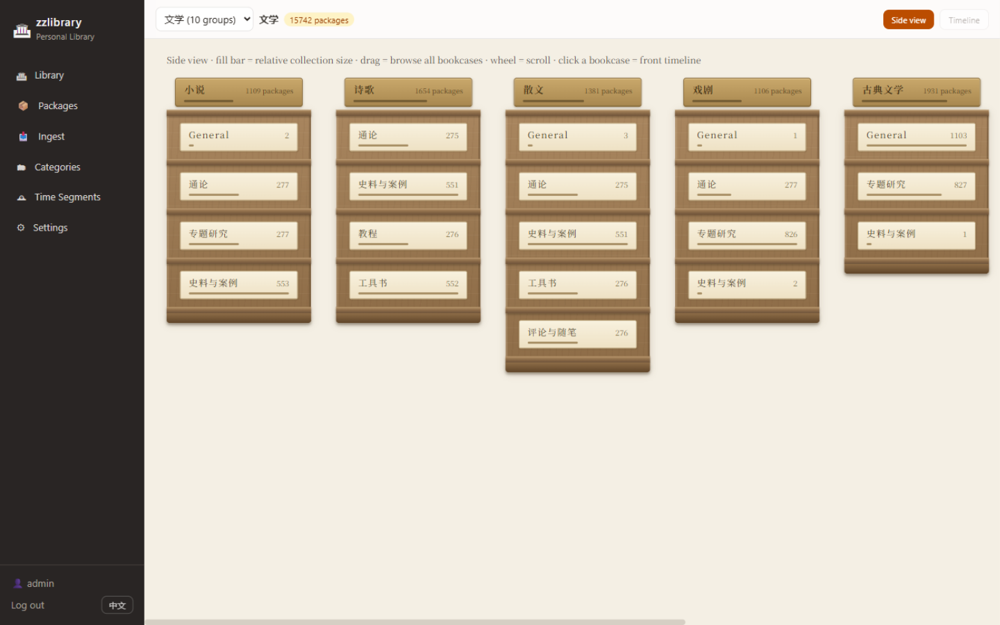
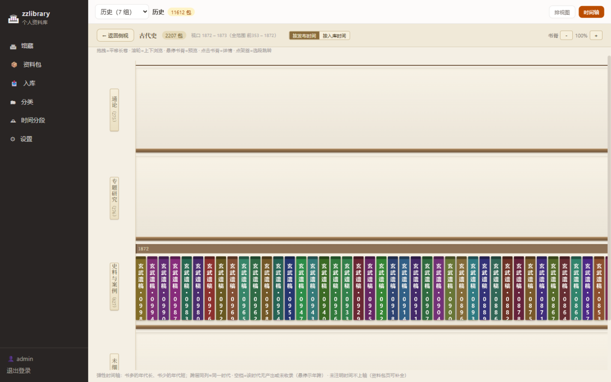
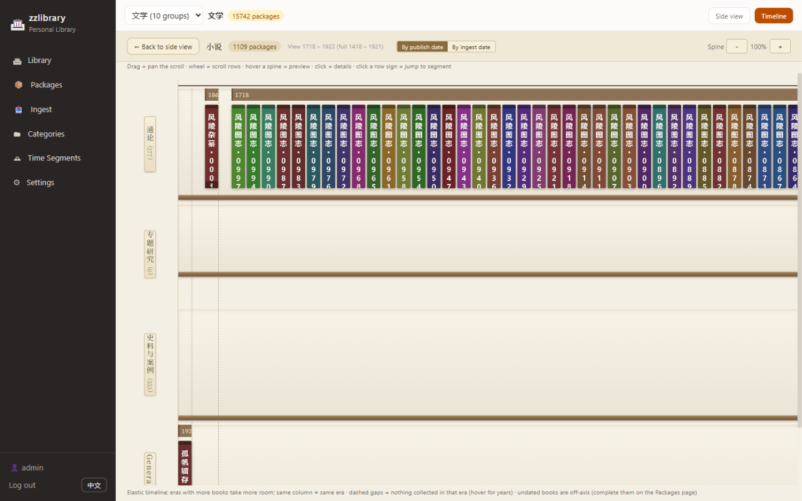
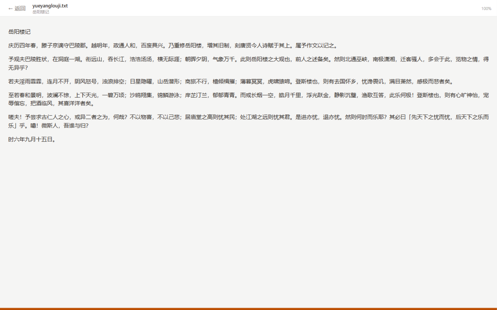
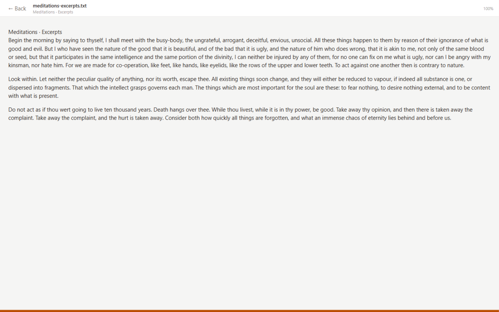

不是一棵文件夹树，而是一排排书架：分类决定上哪座书架，年代决定架上排在哪儿，每份资料是一格书脊。书架间穿行、原地开读——EPUB / PDF / TXT / MD / docx / 图片 / 音视频，进度自动续读。
Not a folder tree — rows of bookcases: classification decides the bookcase, era decides the spot on the shelf, every document stands as one spine. Wander the aisles, read in place: EPUB / PDF / TXT / Markdown / docx / images / audio / video, with resume built in.


同一馆藏两种视角：侧视图总览一排排书架的布局与体量，点进书架变成沿年代铺开的长卷——同年代的书脊上下对齐，书多的年代自然更长。资料包可挂多条分类路径，同时出现在多个书架。
Two views over one collection: a side view of all your bookcases, and inside each a timeline scroll where spines line up by era — same-era books align across rows, busy eras take more room. A package can sit on multiple shelves via multiple classification paths.
内置阅读器带断点续读：EPUB（CFI 定位）、PDF、TXT（编码自动探测）、MD / HTML / docx（沙箱渲染）、图片、音视频。资料包=书架一格，可含任意多文件。
Built-in reader with resume: EPUB (CFI), PDF, TXT (encoding auto-detect), Markdown / HTML / docx (sandboxed), images, audio & video. A package holds any number of files.
全部数据在你自己机器的一个目录里（SQLite + 原件字节原样）；无账号、无云、无遥测。一键「备份整库」，整个目录拷走就是搬家。
Everything lives in one folder on your machine — SQLite plus your files, byte-identical. No accounts, no cloud, no telemetry. One-click full backup; copy the folder to move the library.




# Docker（推荐）
docker run -d --name zzlibrary -p 8000:8000 \
-v /path/to/data:/data \
ghcr.io/wenobug/zzlibrary:latest
或者：下载 zip 解压、装好 Node.js ≥ 22.5、双击启动脚本——浏览器打开 localhost:8000，局域网手机/平板同馆共读。详见 README。
Or: grab the zip, install Node.js ≥ 22.5, double-click the start script — then open localhost:8000 from any device on your LAN. See the README.
书架 + 阅读器 + 本机备份；自托管 zip / Docker 分发。
Shelves + reader + local backup; distributed as a self-hosted zip / Docker image.
Tauri 壳，安装即用。
Tauri shells, install and go.
同一套界面，六端同馆。
Same UI, one library on every device.
WebDAV / S3 兼容，本地释放 + 透明取回。
WebDAV / S3-compatible, local space release with transparent re-fetch.